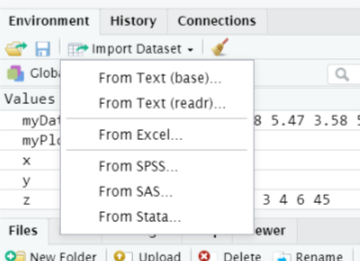
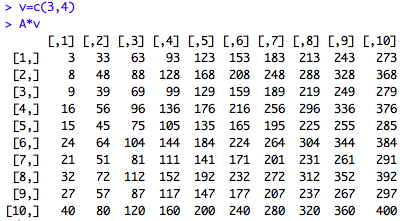

Topic 17 Introduction to R and R studio – Tasks:
17.1 Lesson 1: Tasks
- Use the file menu to create a new R script
- Save the script and call it Analysis1.R
- You can use the # symbol before lines of text to create comments in your script. This helps to keep it organised and seprate chunks of code. At the top of your new script file, create a comment that says “Introduction to R: Lesson 1”
- Ask to other people in the room what age they are. Create a data vector with 3 values, your age and the two others. Name your data object Ages (See “Basic Functions” for example of creating a data vector).
- Use the mean function to calculate the mean age of your Ages dataset.
- Use the sd function to calculate the standard deviation of your Ages dataset.
- Create a new data object called Ages2 which is your Ages dataset multiplied by 2.
- ggplot2 is a package that can make publication-standard plots of your data. We will be using it later. Install the package ggplot2 and use the library command to load it.
- Save your script file if you have not already done so (keep it open).
library(tidyverse)17.2 By the end of this section, you will be able to:
- Import data into R from excel, SPSS and csv files
- Identify different data structures and variable types
- Convert variables from one type to another
- Order, filter and group data
- Summarise data
- Create new variables from data
17.3 The Tidyverse set of packages
- A ‘toolkit’ of packages that are very useful for organsing and manipulating data
- We will use the haven package to import SPSS files
- We will use the dplyr to organise data
- Also includes the ggplot2 and tidyR packages which we will use later
To install:
install.packages("tidyverse")17.4 Importing .csv data into R
- Can use typed commands or the menu:
library(readr)
studentData <- read_csv("Datasets/studentData.csv")## New names:
## Rows: 100 Columns: 6
## ── Column specification
## ─────────────── Delimiter: "," chr
## (3): route, hasDepdendants, sat... dbl
## (3): ...1, grades, hoursOfStudy
## ℹ Use `spec()` to retrieve the full
## column specification for this data. ℹ
## Specify the column types or set
## `show_col_types = FALSE` to quiet this
## message.
## • `` -> `...1`
17.6 R can store many different data types
- Vectors: One-dimensional
- Data frames: Two-dimensional
- Matrices: Two-dimensional
- Arrays, Lists etc…
A data matrix: 
17.7 The data frame
- A data frame is like a table or a two-dimensional array or matrix
- Each column contains values of one variable
- Each row contains one set of values
- Each column name must be unique
# view the first few rows of this dataframe
head(studentData) %>% kableExtra::kable()| …1 | route | grades | hoursOfStudy | hasDepdendants | satisfactionLevel |
|---|---|---|---|---|---|
| 1 | FullTime | 56 | 3 | Yes | Very |
| 2 | FullTime | 47 | 1 | Yes | Not at all |
| 3 | FullTime | 72 | 8 | Yes | Not at all |
| 4 | FullTime | 79 | 0 | Yes | Very |
| 5 | FullTime | 79 | 4 | Yes | Somewhat |
| 6 | FullTime | 80 | 3 | Yes | Somewhat |
17.8 Checking the structure of the data
- The str() command will allow us to check how our data is structured:
str(studentData)## spec_tbl_df [100 × 6] (S3: spec_tbl_df/tbl_df/tbl/data.frame)
## $ ...1 : num [1:100] 1 2 3 4 5 6 7 8 9 10 ...
## $ route : chr [1:100] "FullTime" "FullTime" "FullTime" "FullTime" ...
## $ grades : num [1:100] 56 47 72 79 79 80 76 39 85 41 ...
## $ hoursOfStudy : num [1:100] 3 1 8 0 4 3 1 6 2 5 ...
## $ hasDepdendants : chr [1:100] "Yes" "Yes" "Yes" "Yes" ...
## $ satisfactionLevel: chr [1:100] "Very" "Not at all" "Not at all" "Very" ...
## - attr(*, "spec")=
## .. cols(
## .. ...1 = col_double(),
## .. route = col_character(),
## .. grades = col_double(),
## .. hoursOfStudy = col_double(),
## .. hasDepdendants = col_character(),
## .. satisfactionLevel = col_character()
## .. )
## - attr(*, "problems")=<externalptr>Notice that some of the variable types are incorrect
17.9 Changing variables from one data type to another
studentData$route <- as.factor(studentData$route)
studentData$hasDepdendants <- as.factor(studentData$hasDepdendants)
studentData$satisfactionLevel <- as.ordered(studentData$satisfactionLevel)17.10 Changing variables from one data type to another #2
Let’s check the structure again:
str(studentData)## spec_tbl_df [100 × 6] (S3: spec_tbl_df/tbl_df/tbl/data.frame)
## $ ...1 : num [1:100] 1 2 3 4 5 6 7 8 9 10 ...
## $ route : Factor w/ 2 levels "FullTime","PartTime": 1 1 1 1 1 1 1 1 1 1 ...
## $ grades : num [1:100] 56 47 72 79 79 80 76 39 85 41 ...
## $ hoursOfStudy : num [1:100] 3 1 8 0 4 3 1 6 2 5 ...
## $ hasDepdendants : Factor w/ 2 levels "No","Yes": 2 2 2 2 2 2 2 2 2 2 ...
## $ satisfactionLevel: Ord.factor w/ 3 levels "Not at all"<"Somewhat"<..: 3 1 1 3 2 2 3 2 1 2 ...
## - attr(*, "spec")=
## .. cols(
## .. ...1 = col_double(),
## .. route = col_character(),
## .. grades = col_double(),
## .. hoursOfStudy = col_double(),
## .. hasDepdendants = col_character(),
## .. satisfactionLevel = col_character()
## .. )
## - attr(*, "problems")=<externalptr>str(studentData$satisfactionLevel)## Ord.factor w/ 3 levels "Not at all"<"Somewhat"<..: 3 1 1 3 2 2 3 2 1 2 ...17.11 Changing variables from one data type to another #3
Let’s give a proper name to the row ID:
#Overwriting studentData with a new version, where the ID column has been correctly named
studentData <- studentData %>% rename(ID = ...1)
head(studentData) %>% kableExtra::kable() # viewing the first 5 rows of the data| ID | route | grades | hoursOfStudy | hasDepdendants | satisfactionLevel |
|---|---|---|---|---|---|
| 1 | FullTime | 56 | 3 | Yes | Very |
| 2 | FullTime | 47 | 1 | Yes | Not at all |
| 3 | FullTime | 72 | 8 | Yes | Not at all |
| 4 | FullTime | 79 | 0 | Yes | Very |
| 5 | FullTime | 79 | 4 | Yes | Somewhat |
| 6 | FullTime | 80 | 3 | Yes | Somewhat |
17.12 Sorting data
- Using the dplyr package, we can arrange our data according to student grade:
library(dplyr)
arrange(studentData, grades)## # A tibble: 100 × 6
## ID route grades hours…¹ hasDe…²
## <dbl> <fct> <dbl> <dbl> <fct>
## 1 64 PartTi… 35 7 No
## 2 93 PartTi… 36 8 No
## 3 25 FullTi… 37 7 Yes
## 4 39 FullTi… 37 2 Yes
## 5 46 FullTi… 37 6 Yes
## 6 61 PartTi… 38 2 No
## 7 8 FullTi… 39 6 Yes
## 8 31 FullTi… 39 4 Yes
## 9 58 PartTi… 39 7 No
## 10 67 PartTi… 40 6 No
## # … with 90 more rows, 1 more
## # variable: satisfactionLevel <ord>,
## # and abbreviated variable names
## # ¹hoursOfStudy, ²hasDepdendants
## # ℹ Use `print(n = ...)` to see more rows, and `colnames()` to see all variable namesarrange(studentData, desc(grades)) # Arrange in descending order## # A tibble: 100 × 6
## ID route grades hours…¹ hasDe…²
## <dbl> <fct> <dbl> <dbl> <fct>
## 1 9 FullTi… 85 2 Yes
## 2 43 FullTi… 85 0 Yes
## 3 59 PartTi… 85 4 No
## 4 76 PartTi… 83 6 No
## 5 48 FullTi… 82 6 Yes
## 6 68 PartTi… 82 6 No
## 7 71 PartTi… 82 4 No
## 8 12 FullTi… 81 8 Yes
## 9 74 PartTi… 81 5 No
## 10 6 FullTi… 80 3 Yes
## # … with 90 more rows, 1 more
## # variable: satisfactionLevel <ord>,
## # and abbreviated variable names
## # ¹hoursOfStudy, ²hasDepdendants
## # ℹ Use `print(n = ...)` to see more rows, and `colnames()` to see all variable names17.13 Filtering data
- Show students who acheived a grade of less than 40%
library(dplyr)
filter(studentData, grades < 40)## # A tibble: 9 × 6
## ID route grades hours…¹ hasDe…²
## <dbl> <fct> <dbl> <dbl> <fct>
## 1 8 FullTime 39 6 Yes
## 2 25 FullTime 37 7 Yes
## 3 31 FullTime 39 4 Yes
## 4 39 FullTime 37 2 Yes
## 5 46 FullTime 37 6 Yes
## 6 58 PartTime 39 7 No
## 7 61 PartTime 38 2 No
## 8 64 PartTime 35 7 No
## 9 93 PartTime 36 8 No
## # … with 1 more variable:
## # satisfactionLevel <ord>, and
## # abbreviated variable names
## # ¹hoursOfStudy, ²hasDepdendants
## # ℹ Use `colnames()` to see all variable names17.14 Filtering data #2
- Show part-time students who scored above 70%
library(dplyr)
filter(studentData, grades > 70 & route == "PartTime")## # A tibble: 17 × 6
## ID route grades hours…¹ hasDe…²
## <dbl> <fct> <dbl> <dbl> <fct>
## 1 52 PartTi… 72 4 No
## 2 59 PartTi… 85 4 No
## 3 60 PartTi… 73 2 No
## 4 62 PartTi… 80 0 No
## 5 68 PartTi… 82 6 No
## 6 69 PartTi… 74 7 No
## 7 71 PartTi… 82 4 No
## 8 73 PartTi… 75 8 No
## 9 74 PartTi… 81 5 No
## 10 75 PartTi… 75 1 No
## 11 76 PartTi… 83 6 No
## 12 78 PartTi… 77 0 No
## 13 81 PartTi… 77 7 No
## 14 87 PartTi… 75 1 No
## 15 88 PartTi… 71 1 No
## 16 97 PartTi… 80 5 No
## 17 98 PartTi… 76 5 No
## # … with 1 more variable:
## # satisfactionLevel <ord>, and
## # abbreviated variable names
## # ¹hoursOfStudy, ²hasDepdendants
## # ℹ Use `colnames()` to see all variable names17.15 Using the “pipe” %>% with dplyr
The pipe %>% allows us to:
- write R commands in a way that is easier to read
- Chain multiple commands together
For example:
filteredData <- studentData %>% filter(grades > 70 & route == "PartTime")
17.16 Grouping data
- It is possible to organise the data into groups and performe analysis on each group:
library(dplyr)
studentData %>% group_by(hasDepdendants) %>%
summarise(mean = mean(grades), sd = sd(grades))## # A tibble: 2 × 3
## hasDepdendants mean sd
## <fct> <dbl> <dbl>
## 1 No 62.4 14.3
## 2 Yes 62.3 14.817.17 Remember: we can store that summary data as an object and call it later:
library(dplyr)
summaryTable <- studentData %>% group_by(hasDepdendants) %>%
summarise(mean = mean(grades), sd = sd(grades))
summaryTable## # A tibble: 2 × 3
## hasDepdendants mean sd
## <fct> <dbl> <dbl>
## 1 No 62.4 14.3
## 2 Yes 62.3 14.817.18 Create new variables from data
We can create new variables from existing data using mutuate
library(dplyr)
studentData %>% mutate(passFail = ifelse(grades > 40, "Pass", "Fail"))## # A tibble: 100 × 7
## ID route grades hours…¹ hasDe…²
## <dbl> <fct> <dbl> <dbl> <fct>
## 1 1 FullTi… 56 3 Yes
## 2 2 FullTi… 47 1 Yes
## 3 3 FullTi… 72 8 Yes
## 4 4 FullTi… 79 0 Yes
## 5 5 FullTi… 79 4 Yes
## 6 6 FullTi… 80 3 Yes
## 7 7 FullTi… 76 1 Yes
## 8 8 FullTi… 39 6 Yes
## 9 9 FullTi… 85 2 Yes
## 10 10 FullTi… 41 5 Yes
## # … with 90 more rows, 2 more
## # variables:
## # satisfactionLevel <ord>,
## # passFail <chr>, and abbreviated
## # variable names ¹hoursOfStudy,
## # ²hasDepdendants
## # ℹ Use `print(n = ...)` to see more rows, and `colnames()` to see all variable names